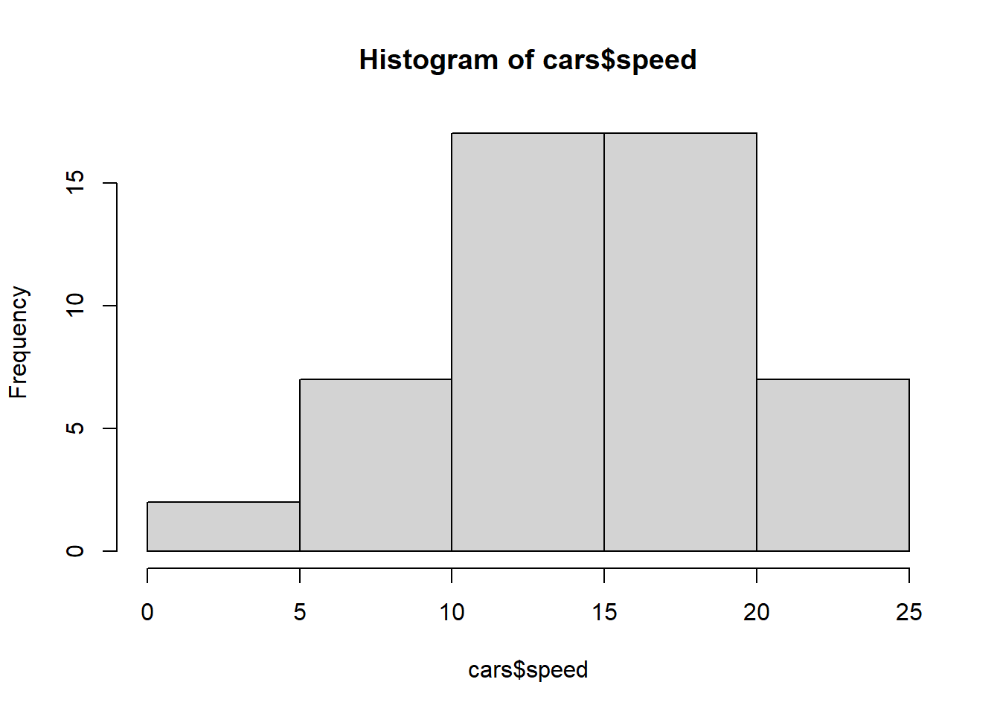
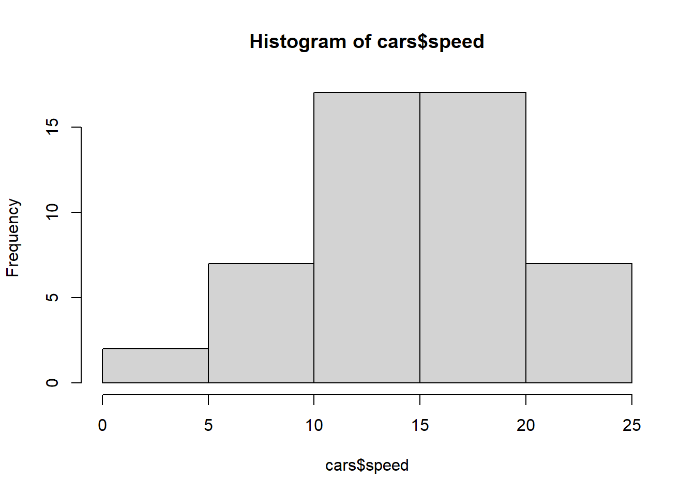

Code
hist(cars$speed)
The ethics of data science are very important, and all data analyst, data scientists, and everyone who works with data should know the principles of ethics.
All individuals handling data are obligated to report any occurrences such as data theft, improper storage, unethical data collection, or data misuse.
For example, a business might track and store information about a customer’s path, starting from the moment they enter their email address on the website until they purchase products. In such cases, it is essential that the individual’s report remains confidential and is safeguarded it from unauthorized access.
The study and evaluation of ethical issues related to data have led to the emergence of a new domain in ethics, known as “data science ethics.” Data can be collected, recorded, generated, processed, shared, and used. This field also covers various data and technologies, including programming, professional code, and algorithms.
In the past, ethical principles in computer and information science primarily focused on the content and information present within computer systems. However, with the advancement of technology and the increasing volume of data, the scope of data science ethics has expanded to include concepts and principles related to data collection, use, processing, and sharing.
When companies collect data from individuals, ethical issues related to privacy, personal information, and data misuse arise. However, when companies begin to use these data for purposes not initially specified, even more ethical concerns emerge. In other words, companies try to monetize the collected data, using it in ways that were not previously disclosed. This practice further challenges privacy, trust, and ethics in data collection and use.
Although “ethics” seems complicated, it is really about understanding what is right or wrong. There are different ways people think about ethics, especially when it comes to data world.
Data Ethics covers the moral and ethical obligations related to the collection, sharing, and use of data, focusing on ensuring its fair and beneficial applications. It is mainly focused on any negative impacts that data might have on individuals, groups or wider society.
In an era where data is considered the new oil, understanding the ethical issues related to its collection, analysis, and use is of most important. Below, we will introduce the five key ethical principles that every data professional should be aware of.
Ownership: The first principle of data ethics is that every individual has the right to ownership over their personal information. Just as it is considered theft to take an object without its owner’s permission, collecting someone’s personal information without their consent is both illegal and unethical. Some common methods for obtaining consent include signed written agreements, digital privacy policies that require users to agree to a company’s terms and conditions, and pop-up windows with check-boxes that allow websites to track users’ online behavior with cookies. *Never assume customers agree to their information being collected; always seek their permission to avoid ethical and legal problems.
Transparency: In addition to ownership, individuals whose data you collect have the right to know how you plan to gather, store, and use their personal information. When collecting data, prioritize transparency and provide them with all necessary information.
For example, imagine your company decides to implement an algorithm to personalize the website experience based on user shopping habits and behavior. You should develop a policy explaining that cookies will track user behavior, the collected data will be stored in a secure database, and an algorithm will be trained to personalize the website experience.
Users have the right to access this information so they can decide whether to accept or reject your website’s cookies. Hiding or lying about your company’s methods and goals is deceptive, illegal, and unfair to the individuals whose data you handle.
Privacy: One of the ethical responsibilities associated with handling data is preserving the privacy of individuals whose data is involved. Even if a customer has given your company permission to collect, store, and analyze their Personally Identifiable Information (PII), it does not mean they want this information to be publicly accessible.
PII is any data that relates to an individual’s identity. This typically includes items such as full name, address, phone number, date of birth, credit card number, bank account number, social security number, passport number, and other information that can be used to identify a person.
To protect individuals’ privacy, ensure you store data in a secure database to prevent it from falling into the wrong hands. Data security methods that help maintain privacy include file encryption (transforming information into a readable format only with an encryption key) and dual-authentication (password protection with two-factor authentication).
One way to prevent errors is to de-identify the dataset. When all PII is removed, only anonymous data remains, and the dataset can no longer be traced back to individuals. This allows analysis to identify relationships between variables of interest without linking data points to personal identities.
Intention : Before you even begin collecting data, it is crucial to consider why you need this data and what purpose you aim to achieve with it. If your intention is to engage in unethical activities, such as harassing others or improperly exploiting individuals’ vulnerabilities, then collecting their data is not ethical. Ethical data collection requires a legitimate purpose and operating in accordance with regulations and ethical principles.
Even when your intention is good - for instance, collecting data to understand health experience in order to create an app that addresses urgent needs – you still need to evaluate your purpose for collecting every piece of data.
Outcomes : Even if your intention and purpose in collecting and analyzing data are good, the outcome of this process might unintentionally cause harm to individuals or groups. This type of harm is known as disparate impact and is considered invalid under civil rights laws, meaning it is illegal.
Unfortunately, you cannot definitively predict the exact impact of data analysis until it is complete. However, by considering this question and its importance before conducting the analysis, you can identify any potential disparate impacts that might occur. By being aware if the possibility of disparate impact, you can then take the necessary steps to prevent and mitigate it.
Using information ethically within decision-making has always been important. However, two factors have made data ethics business-critical:
Data Volumes : There has been an explosion in the amount of data available to organizations, both collected themselves, ans sourced from third-parties. It is not always clear where this information has come from, particularly in the case of personal information, and what permissions have been provided for its reuse.
Artificial Intelligence : Organizations are increasing using machine learning and artificial intelligence algorithms to make sense of data and take automated decisions based on data analysis without involving human oversights. This can lead to issues around fairness and discrimination, even if these are unintended consequences of how data is used.
The importance of ethics in data science stems from the necessity of having a clear set of rules and guidelines that determine what businesses can and cannot do with the personal information they collect from their customers. This is crucial for safeguarding customer privacy and rights, and appropriate laws and standards must be established to protect personal information.
All experts agree that certain fundamental principles must be implemented, even if this field still contains gray areas and nothing is simple or uniform. These are just a few important topics and strategic ideas that have currently garnered the most attention. However, there is still much ground to cover in data ethics, and further progress and development are needed in this area.
Exercise 1: Identify the data ethics principle
Is it clear what data is being used for, how and where it is being stored, and is this information freely available to all? (Answer: Transparency)
Are you collecting only data that is necessary and relevant to your clearly defined goals? (Answer: Intention)
Have you anticipated any potential harmful, negative, or biased impacts that could result from your use of the data? (Answer: Outcomes)
Is any personal or identifiable data being securely stored and anonymized to prevent unauthorized access? (Answer: Privacy)
Have you obtained informed consent from individuals for how their data will be used in your project? (Answer: Ownership)
A company collects location data from users’ mobile phones but does not disclose that this information will be shared with advertisers.
→ Related Principle: Transparency
An analyst stores survey responses on an unsecured shared drive, and the file includes names and phone numbers of participants.
→ Related Principle: Privacy
A data science team begins using a health dataset for a study unrelated to the one participants originally agreed to take part in.
→ Related Principle: Ownership
Before collecting any data, a team carefully evaluates whether the data they plan to gather is essential to their project goals and excludes anything not directly needed.
→ Related Principle: Intention
Before launching a new app feature based on user behavior data, a team conducts a risk assessment to explore how it might negatively affect vulnerable users.
→ Related Principle: Outcomes
Here’s how to create a histogram in R.
hist(cars$speed)
Create a boxplot using the cars$dist variable.